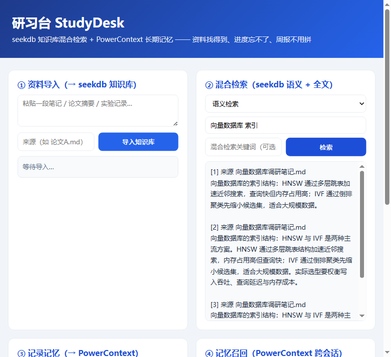
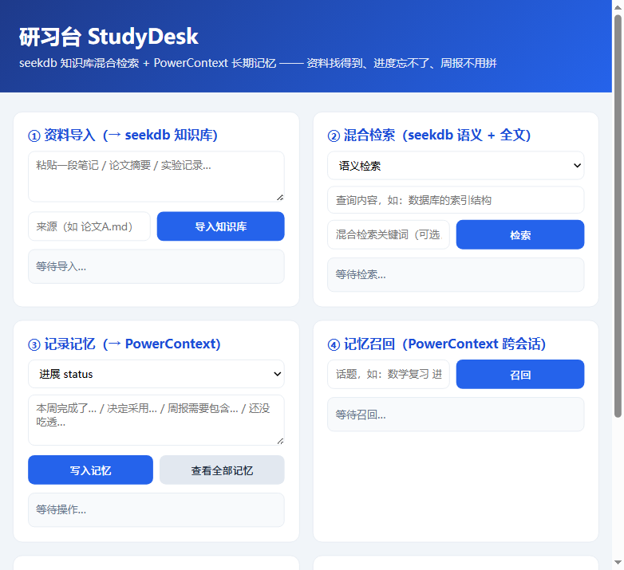

学习、科研与日常工作中，最浪费时间的是「重复找、反复问、拼拼凑凑」。
想找「某个结论在哪篇论文的哪一段」，只能一篇篇翻。研习台把论文、笔记、实验记录导入本地知识库，语义 + 关键词混合检索，直接返回段落和出处。
跨会话的进展、决策、约束、薄弱点总是丢失。研习台用 PowerContext 长期记忆记录，周报和复习清单自动从记忆 + 知识库组合生成。
从聊天记录和笔记里拼周报很痛苦。研习台一条命令生成周报草稿：进展、决策、约束、薄弱点来自记忆，相关资料自动从知识库检索附上。
CLI 与 Web 双入口，核心引擎由 Qoder 开发，seekdb 与 PowerContext 各司其职。
| CLI 命令 | 作用 |
|---|---|
import <file|dir> | 导入 .md/.txt 资料，分块向量化写入 seekdb 知识库 |
search <查询词> | 语义检索，返回相关段落与来源 |
hybrid <关键词> <查询词> | 全文 + 语义混合检索（RRF 融合） |
record --kind <k> <文本> | 写入长期记忆：status / decision / constraint / weakpoint |
recall <话题> | 从长期记忆召回相关内容 |
weekly / review | 生成周报草稿 / 复习清单（记忆 + 资料组合） |
Web 界面（端口 8787）提供同等的资料导入、混合检索、记录记忆、记忆召回四个交互模块，并带真实运行的后端健康检查。

本地向量化 + seekdb 混合检索 + PowerContext 长期记忆，无任何外部 API 依赖，数据全部保存在本地。
知识库的存储与混合检索：资料经本地向量化（bge-small-zh-v1.5，512 维）后写入，HNSW 向量索引 + ik 全文索引；hybridSearch 将全文与语义结果融合，检索结果直接用于资料问答与周报相关资料段落。
长期记忆服务：进展 / 决策 / 约束 / 薄弱点以 atomic-memory 写入 scope，跨会话召回；周报与复习清单的数据来源。在 seekdb 引擎不可用时自动降级为资料存储，功能不中断。
seekdb 为进程内原生插件，项目采用子进程探测 → 失败自愈（重建数据目录）→ 自动降级三层保障，保证任何环境下 `npm run demo` 都能一键跑通验证样例。
内置验证样例 `npm run demo`（幂等可重跑），全部断言通过；以下为真实运行输出摘录。
=== 研习台 StudyDesk 验证样例 ===
[知识库] 引擎：seekdb（嵌入式，本地向量 + ik 全文混合检索）
PASS 知识库可读写 — 当前文档数 4
PASS 检索命中相关资料 — top1: 向量数据库的索引结构：HNSW 通过多层跳表加速近邻搜索，查…
PASS 混合检索（关键词+语义）非空 — 命中 4 条
PASS 记忆写入成功 — artifact_id=art_705ca…
PASS 记忆召回命中 — top: 【来源：考研数学复习笔记.md】考研数学复习：泰勒展开、拉格…
PASS 周报生成包含进展与检索 — status=3, 检索 3 次
SCENARIO OK ✅（全部断言通过）
技术作用核对：检索命中、混合检索、计数均由 seekdb 实际提供；记忆写入、跨会话召回、周报数据来源由 PowerContext 实际提供（详见仓库 docs/验证记录.md 与 data/scenario-result.json）。
项目为本地运行应用，3 条命令即可完整体验（完整步骤见仓库 docs/运行说明.md）。
# 1. 安装依赖（自动下载 seekdb 绑定与本地向量模型） npm install # 2. 写入演示数据（8 条资料 + 5 条记忆，幂等） npm run demo-data # 3. 一键验证样例（6 项断言，seekdb / PowerContext 双技术证据） npm run demo # 4. 启动 Web 界面 npm run web # 打开 http://127.0.0.1:8787

| 材料 | 位置 |
|---|---|
| 源码（含 Qoder 实现规格与开发记录） | 仓库 qoder/studydesk（分支 2026-competition-ecosystem） |
| 运行说明 / 验证记录 / 提交材料 | docs/运行说明.md、docs/验证记录.md、docs/提交材料.md |
| Qoder 开发输入（Stage 1~4 规格） | docs/specs/stage1~4-*.md、test-stage1.mjs |